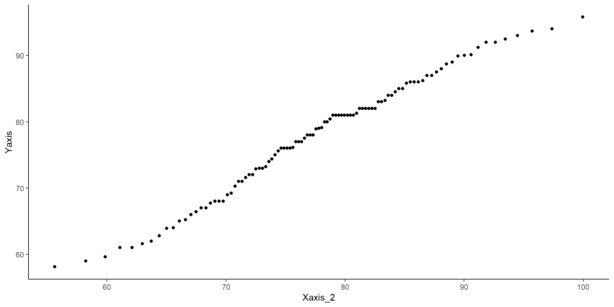

The rio package (Becker et al., 2024) developers describe this package as the Swiss-Army Knife for Data I/O. The import() and export() functions can import/export just about any data type.
The tidyverse package (Wickham & RStudio, 2023) loads a suite of packages that help with data cleaning and visualization. Among others, tidyverse loads both dplyr and ggplot2.
The psych package (Revelle, 2024) includes MANY functions that help with data exploration and running analyses typically done in the social sciences.
A Note on Loading Data in R
There are millions of ways of doing the same thing. Loading data into R is the same. Here are your two alternatives for loading data into R:
Option 1: keep track of all the different functions to load different types of data files
read.csv()read.table()read.delim()read.ftable()read.csv2()readRDS()readr::read_csv()readr::read_tsv()readxl::read_excel()haven::read_sav()haven::read_dta()haven::read_sas()haven::read_stata()# there's more, but you get the point
Option 2: achieve complete peace of mind üòå by using the import() function from the rio package
rio::import()
Me after realizing that import() works on just about any type of data
How I Will Fix Everyone’s Working Directory Issues
How many of you have tried to load a data file, only to find out that it wasn’t in your working directory?
Typical Fordham stats lab experience:
NY_temp <-try(import("NY_Temp.txt"))
Error : No such file: NY_Temp.txt
Me spending 10 minutes to load the data at the beginning of lab and then be completely lost because we are already on slide 9
New and improved experience?
I have uploaded all the datasets that we will use for this lab to a github repository.
So, all we need to do is give R the download link. No need to download any files or set working directories!
# run the line below and you should see the data appear in your environmentNY_temp <-import("https://github.com/quinix45/PSYC-7804-Regression-Lab-Slides/raw/refs/heads/main/Slides%20Files/Data/NY_Temp.txt")
Some Descriptive Statistics
Now that we have loaded our data , we should compute some descriptive statistics.
The str() function can give you good sense of the type of variables you are dealing with
When dealing with continuous variables, the describe() function from the psych package is quite handy
# the `trim = .05` argument calculates means without the bottom/top 2.5% of the data# add IQR = TRUE to get the interquartile rangepsych::describe(NY_temp[,-1], trim = .05)
vars n mean sd median trimmed mad min max range skew kurtosis se
NY_Ozone 1 111 42.10 33.28 31.0 39.50 25.20 1.0 168.0 167.0 1.23 1.13 3.16
SolR 2 111 184.80 91.15 207.0 186.52 91.92 7.0 334.0 327.0 -0.48 -0.97 8.65
Temp 3 111 77.79 9.53 79.0 77.89 10.38 57.0 97.0 40.0 -0.22 -0.71 0.90
Wind 4 111 9.94 3.56 9.7 9.84 3.41 2.3 20.7 18.4 0.45 0.22 0.34
what does the [,-1] do in the code above? Why did I include it?
The :: operator
Notice the psych::describe(). This reads ‚Äúuse the describe() function from the psych package‚Äù. This is equivalent to running library(psych) and then describe(), but using psych::describe() is better for learning purposes. Why? ü§î
NOTEü§î: once skewness is no longer 0, the mean shown on the plot will no longer correspond to the Mean shown in the box?! This is a bit in the weeds, but the mean on the plot is the expectation of the skew-normal distribution, while the number in the Mean box is the location parameter of the skew-normal distribution.
Plotting With GGplot
I use ggplot2 a lot, but I can’t say that I would be able to create all plots “off the top of my head”. There are millions of ggplot2 functions, so learning what all of them do is impossible. When using ggplot2, I recommend that you:
Try to understand the logic behind ggplot’s syntax.
Start with a simple plot and progressively build upon it.
Read functions documentation (i.e., function help menu) when something does not work as expected.
Look things up. Usually I start with some plot code that I find online that produces a similar plot to what I want, and then I modify/build on top of it.
GGplot fact that you did not ask for
ggplot2(Wickham et al., 2024) is an implementation of Leland Wilkinson’s Grammar of Graphics, a scheme that breaks down data visualization into its components (e.g, lines, axes, layers…)
GGplot Step by step
As mentioned in the box on the last slide, ggplot2 breaks visualizations into small parts and pastes them on top of each other through the + operator.
ggplot()
Just running ggplot() actually gives output! This is our “canvas”
GGplot Step by step
We use the aes() function to defined coordinates. Note that the name of the data object (NY_temp in our case) is almost always the first argument of the ggplot() function. Let’s plot the temperature observed (Temp, \(y\)) at every measured time point (Case, \(x\)).
ggplot(NY_temp, aes(x = Case, y = Temp))
GGplot Step by step
We use one of the geom_...() functions to add shapes to our plot. This is a Profile plot.
ggplot(NY_temp, aes(x = Case, y = Temp)) +geom_point()
geom_...()
The geom_...() functions add geometrical elements to a blank plot (see here for a list of all the geom_...() functions). Note that most geom_...() will inherit the X and Y coordinates from the ones given to the aes() function in the ggplot() function.
GGplot Step by step
Before we do anything else, let’s save our eyes from ggplot2’s default theme. There are many themes you can choose form, I like theme_classic().
ggplot(NY_temp, aes(x = Case, y = Temp)) +geom_point() +theme_classic()
Set plots theme globally
You can also use the theme_set() that will set a default theme for all the plots that you create afterwards. So, in our case, we could run theme_set(theme_classic()), and the theme_classic() function would be applied to all the following plots, without needing to specify + theme_classic() every time.
GGplot Step by step
We just drew a linear regression line through the data. What do you think of the trend of temperature in NYC over time?
ggplot(NY_temp, aes(x = Case, y = Temp)) +geom_point() +theme_classic() +geom_smooth(method ="lm", se =FALSE)
GGplot Step by step
Now we added a quadratic regression line. Does this look better?
ggplot(NY_temp, aes(x = Case, y = Temp)) +geom_point() +theme_classic() +geom_smooth(method ="lm", se =FALSE) +geom_smooth(method ="lm", formula = y ~poly(x, 2), color ="red", se =FALSE)
GGplot Step by step
Here I made a bunch of changes to the plot. Spot the differences! What changes in the code resulted in what changes in the plot?
ggplot(NY_temp, aes(x = Case, y = Temp)) +geom_point(shape =1) +theme_classic() +geom_smooth(method ="lm") +geom_smooth(method ="lm", formula = y ~poly(x, 2), color ="red") +labs(title ="Temperature in New York City Measured over a Year",y="Temperature", x ="Measurement") +theme(plot.title =element_text(hjust =0.5, face ="bold", size =16),axis.title.x =element_text(face="bold", size =12),axis.title.y =element_text(face="bold", size =12))
NOTE: The theme() function takes in many arguments (see here) that allow you to modify font size, position of plot elements, and much more!
1D Scatterplot ü§î
This is the one-dimensional representation of the Temp variable.
ggplot(NY_temp, aes(x = Temp, y =0)) +geom_point(shape =1) +theme_classic()
This plot gives a good graphical representation of the variance of a variable (I will use it again in a later lab to show something!). However, for visualizing data, we have better options…
Histograms
Histograms are fairly useful for visualizing distributions of single variables. But you have to choose the number of bins appropriately.
# set theme globallytheme_set(theme_classic())ggplot(NY_temp, # note that we only need to give X, why?aes(x = Temp)) +geom_histogram()
bins?
the number of bins is the number of bars on the plot. the geom_histogram() function defaults to 30 bins unless you specify otherwise (we indeed have 30 bars on the plot if you count them).
There are a bit too many bins, so it is hard to get a good sense of the distribution.
Histograms
Now that we have reduced the number of bins, the distribution looks more reasonable.
Here I just touched up the plot a bit. Notice the scale_y_continuous(expand = c(0,0)) function. Try running the plot without it and see if you notice the difference!
The “#3492eb” is actually a color. R supports HEX color codes, which are codes that can represent just about all possible colors. There are many online color pickers (see here for example) that will let you select a color and provide the corresponding HEX color code.
Box-Plots
Box-plots useful to get a sense of the variable’s variance, range, presence of outliers.
ggplot(NY_temp,aes(y = Temp)) +geom_boxplot()
Reading a Box-plot
The square represents the interquartile range, meaning that the bottom edge is the \(25^{th}\) percentile of the variable and the top edge is the \(75^{th}\) percentile of the variable. The bolded line is the median of the variable, which is not quite in the middle of the box. This suggests some degree of skew.
Kernel Density plots
Kernel density plots do a similar job to histograms, but I tend to prefer them over histograms.
Here we just modify the type of kernel to “epanechnikov”. the default is “gaussian”, which I believe is very similar to Epanechnikov’s. See here at the bottom of the page for other kernel options.
The word kernel takes on widely different meanings depending on the context. In this case it is a function that estimates the probability distribution of some data (the black line in the plot) by looking at the density of observations at every point on the \(x\)-axis. Kernel estimation is often referred to as a non-parametric method.
Kernel Density plots
You can also use the adjust = argument to determine how fine-grained you want your density plot to be. The default is adjust = 1. Here, adjust = .2 is a bit too fine-grained.
QQplots give a graphical representation of how much a variable deviates from normality. Personally, I find QQplots a bit unintuitive üòï. Unlike other plots, the meaning of their axes is not very clear. For now, let‚Äôs look at how to create a QQplot. The next slides will have an explanation of what a QQplot actually does.
This is the code that you want to use to use to create QQplots. All the code on the next slides is for learning purposes only.
Understanding QQplots
QQplots use the idea of quantiles (both Qs stand for “quantile”). You are probably more familiar with percentiles, which are the exact same as quantiles, save for their units (e.g., the \(.5\) quantile is the same as the \(50^{th}\) percentile). If it makes it easier, whenever you see quantile, just think of it as percentile.
What do the x-axis and the y-axis represent in a QQplot?
x-axis: Values corresponding to quantiles of a perfectly normal distribution.
# quantile values of .1, .5., .8 for normal distribution with mean = 0 and sd = 1# this will results in Z-scores that correspond to the # 10th, 50th, and 80th percentileqnorm(c(.1, .5, .8), mean =0, sd =1)
[1] -1.2815516 0.0000000 0.8416212
y-axis: Values of the corresponding observed quantiles of our variable
# The quantile function calculates the observed percentiles fo a given variable.# by supplying c(.1, .5, .8) we want the 10th, 50th, and 80th percentile of Tempquantile(NY_temp$Temp, c(.1, .5, .8))
10% 50% 80%
64 79 86
d, p, q, r?
Any probability distribution in R has a d, p, q, and r variant. We just used the q variant of the normal distribution, qnorm() (see here for all base R distribution functions). d calculates the density (i.e., height) of a probability distribution for a given \(x\) value, p gives the quantile corresponding to a value (e.g., pnorm(0) gives 0.5), q gives the value corresponding to a quantile (e.g., qnorm(0.5) gives 0), and r generates random values from a distribution.
Creating QQplot Data
So, what now? Well, on the left, we only calculated the coordinates for 3 of the dots on the QQplot. Normally, QQplots do it for all 99 quantiles (\(1^{st}\) percentile to \(99^{th}\) percentile). Let’s walk through the process:
# first, it is useful to define all the quantiles that we want as a vectorquantiles <-seq(from = .01, to = .99, by = .01) str(quantiles)
# calculate quantiles for normal distribution and real dataXaxis <-qnorm(quantiles)Yaxis <-quantile(NY_temp$Temp, quantiles)# Note that you can use ANY mean and SD value for the qnorm() function.# Here, I use the mean and SD of the Temp variableXaxis_2 <-qnorm(quantiles, mean =mean(NY_temp$Temp), sd =sd(NY_temp$Temp))# create a data.frame (ggplot like data.frame objects)QQdata <-data.frame("Xaxis"= Xaxis,"Xaxis_2"= Xaxis_2,"Yaxis"= Yaxis)head(QQdata)
If the explanation before made no sense, here’s a recreated QQplots to convince you (hopefully?)
The pattern of points is the exact same as the one generated by the stat_qq() function.
ggplot(QQdata, aes(x = Xaxis, y = Yaxis)) +geom_point()
As mentioned, the quantiles generated from any different normal distribution will not change the pattern of the dots (magic? Do give this some thought if it does not make sense to you)
ggplot(QQdata, aes(x = Xaxis_2, y = Yaxis)) +geom_point()

The values on the X-axis are the only difference.
A more intutive “QQplot”?
Really, what a QQplot does is tell you how much your observed data (Y-axis) match/mismatch a perfectly normal distribution (X-axis). The same exact information can be conveyed in a possibly more intuitive way…
ggplot(QQdata, aes(x = Xaxis_2, y = Yaxis)) +geom_point() +# equivalent to stat_qq_line()geom_abline(intercept =0, slope =1)
ggplot(NY_temp, aes(x = Temp)) +geom_density() +# the funciton below adds the normal distribution (in blue)geom_function(fun = dnorm, args =list(mean =mean(NY_temp$Temp),sd =sd(NY_temp$Temp)),color ="blue") +xlim(45, 110)
You should be able to see that the normal distribution deviating from the observed data in the plot on the right is mirrored exactly by the dots deviating form the line in the plot on the left üßê
References
Becker, J., Chan, C., Schoch, D., Chan, G. C., Leeper, T. J., Gandrud, C., MacDonald, A., Zahn, I., Stadlmann, S., Williamson, R., Kennedy, P., Price, R., Davis, T. L., Day, N., Denney, B., Bokov, A., & Gruson, H. (2024). Rio: A Swiss-Army Knife for Data I/O (Version 1.2.3) [Computer software]. https://cran.r-project.org/web/packages/rio/index.html
Wickham, H., Chang, W., Henry, L., Pedersen, T. L., Takahashi, K., Wilke, C., Woo, K., Yutani, H., Dunnington, D., Brand, T. van den, Posit, & PBC. (2024). Ggplot2: Create Elegant Data Visualisations Using the Grammar of Graphics (Version 3.5.1) [Computer software]. https://cran.r-project.org/web/packages/ggplot2/index.html